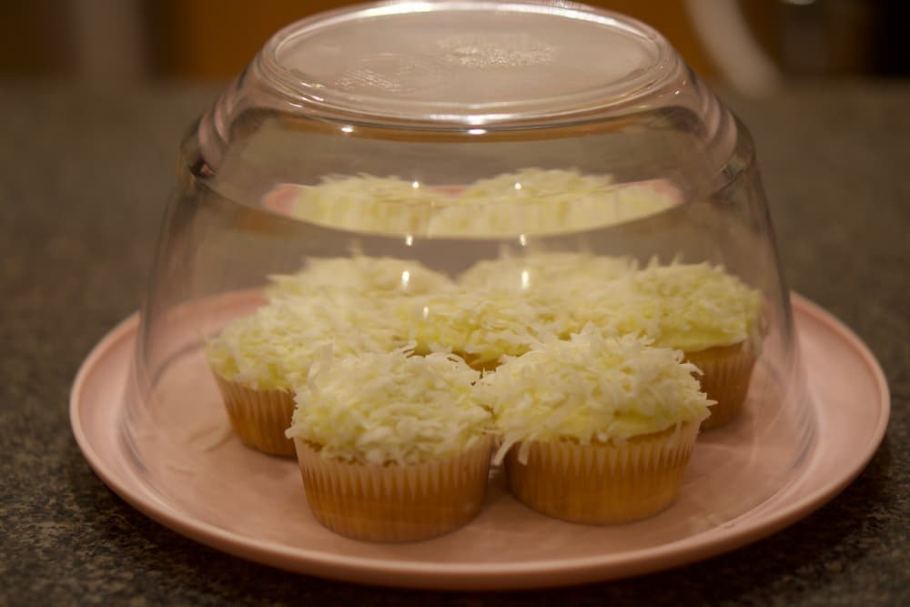
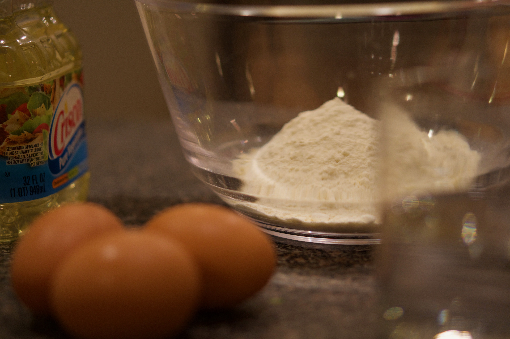
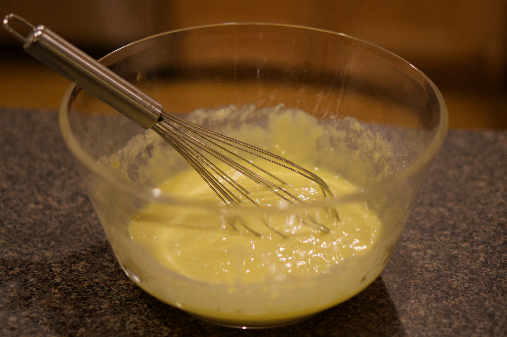
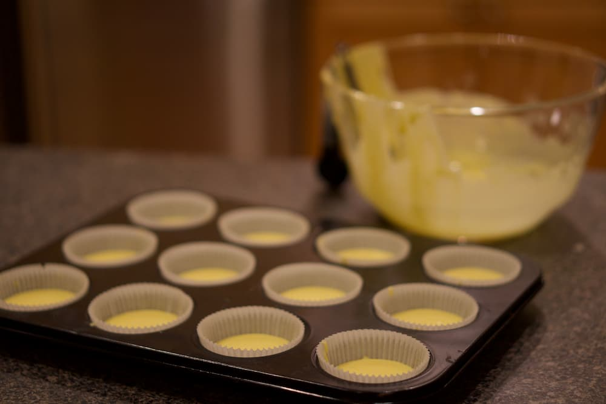
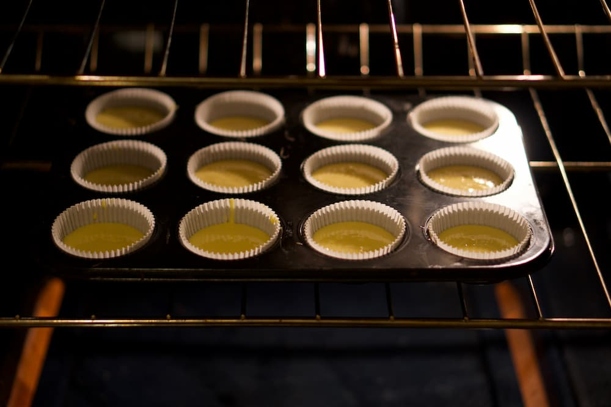
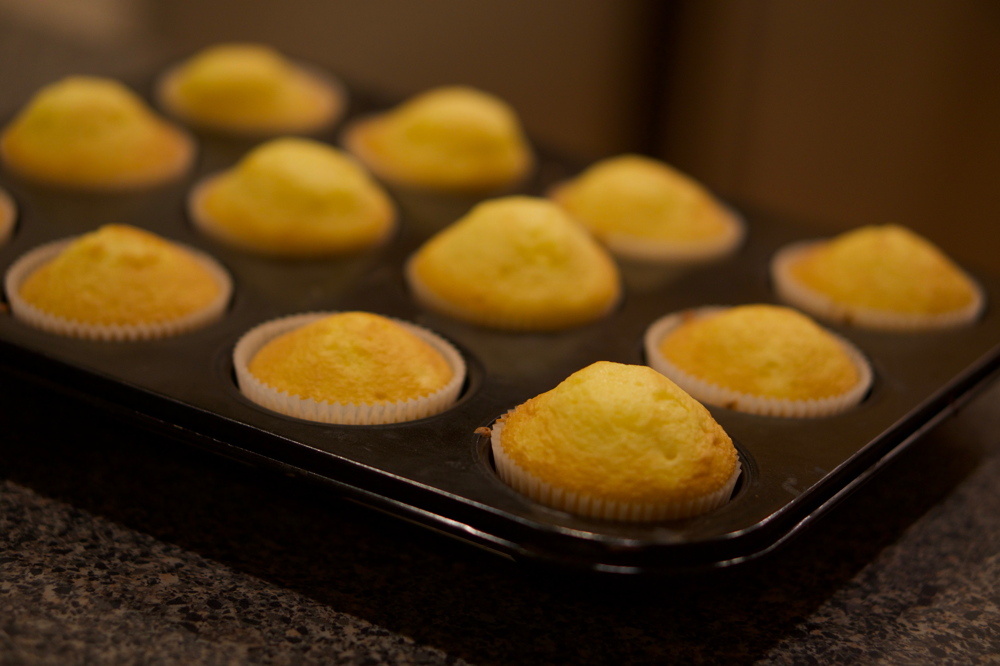
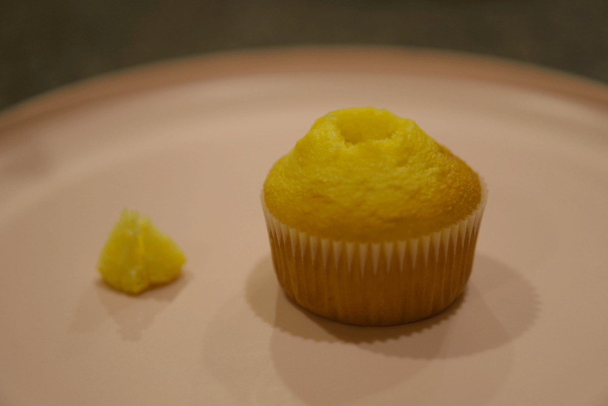

How To:
Not Your Average Cupcake Recipe

So you're having a gathering, a party of sorts, and the generic store bought chocolate and vanilla cupcakes with overly sweet frosting just won't cut it. You want your guests to be blown away by your fanciness and origianlity. Well if that's the case, I've got the perfect cupcake recipe for you! The Lemon Coconut Cupcake with Rasberry Filling is perhaps the fanciest, and most delicious cupcake I have ever tasted.
Here's what you'll need:

Let's get started.
- Preheat oven to 325°F for nonstick cupcake tin
- Mix cake mix, water, oil, and eggs in large bowl with a mixer on medium speed or beat vigorously by hand for 2 minutes.
- Line the cupcake tin with baking cups.
- Pour the batter into all of the baking cups.
- Place the cupcake tin into the oven and bake for 12-17 minutes.
- Remove from oven and let cupcakes cool completely
- Using a small knife, cut a small hole out of the top of each cupcake and place the slice of cupcake to the side (see figure).
- Fill each hole with rasberry jam and place the piece of cupcake back into the now filled hole.
- Apply frosting to top of every cupcake.
- Dip the top of each cupcake into bowl of coconut shreds.
- Unwrap and enjoy!




